Hadoop集群搭建<图文版> · 2021/9/17
🌏准备工具：
- VMware Workstation [虚拟机软件]
- SecureCRT 或 Xshell [远程连接工具]
- Hadoop 2.7.3
- Linux Jdk1.8.0_65
🤔前言：
- 注意修改为自己的网关、网段 【凡涉及之处会提示“【!】”】
- 注意修改为自己的主机名
一. 新建虚拟机
参考传送门: http://andtun.cn/vm.html
// 夹带私货,偷偷引流
二. 虚拟机配置及集群规划
登录 > 修改主机名 > 获取网关 > 规划集群 > 配置网卡 > 修改Hosts > 关防火墙
✒️登录
// 略 密码是不显示的，所以输入之后直接回车即可
📝修改主机名
hostnamectl set-hostname node01 // 其中 node01 指的是 需要修改成主机名
🧐获取网关
VMware软件主界面 >> 编辑 >> 虚拟网络编辑器 >> VMnet8 >> NAT设置
// 获得网关IP：192.168.96.2 【!】
VMware软件主界面 >> 编辑 >> 虚拟网络编辑器 >> VMnet8 >> DHCP设置
// 获得网段：[起始IP地址]192.168.128 --- [结束IP地址]192.168.96.254 【!】
// 即下面计划的IP在起始和结束之内就可以
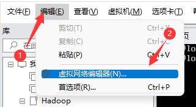
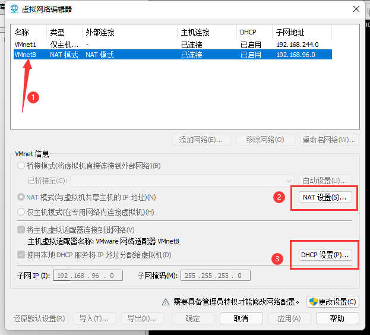
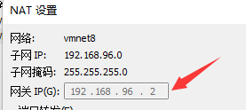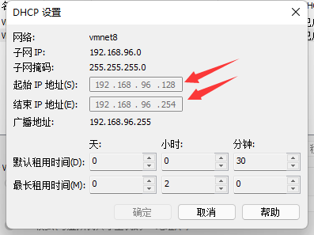
📋计划集群
// 计划集群的ip和主机名 【!】
192.168.96.151 node01
192.168.96.152 node02
192.168.96.153 node03
📤配置网卡
vi /etc/sysconfig/network-scripts/ifcfg-ens33
// 修改
BOOTPROTO=static // 修改为静态IP
ONBOOT=yes // 开机启动网卡
// 添加
IPADDR=192.168.96.151 // IP地址[注意要在网段内] 【!】
GATEWAY=192.168.96.2 // 设置你的网关 【!】
NETMASK=255.255.255.0 // 设置子网掩码
DNS1=119.29.29.29 // DNS
DNS2=8.8.8.8 // 备用DNS
// systemctl restart network 重启网络
// 配置完网卡之后需要重启网络才能生效,但这里我们可以不重启网络,因为教程后面需要重启虚拟机
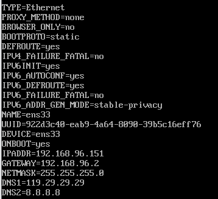
📝修改Hosts
1.修改虚拟机Hosts
vi /etc/hosts
// 添加 【!】
192.168.96.151 node01
192.168.96.152 node02
192.168.96.153 node03
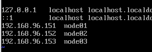
2.修改Windows电脑上的的Hosts
此电脑 >> C盘 => Windows >> System32 >> drivers >> etc >> hosts
// 添加 【!】
192.168.96.151 node01
192.168.96.152 node02
192.168.96.153 node03
// 有权限保存不了就 复制出来 改好了 覆盖回去
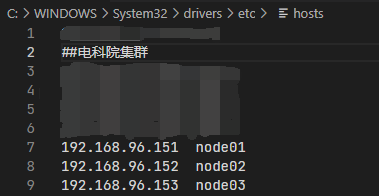
📛关闭防火墙
systemctl stop firewalld // 关闭防火墙
systemctl disable firewalld // 禁止开机启动防火墙
// systemctl status firewalld 查看防火墙状态
reboot // 重启虚拟机
🔗三.远程连接工具并上传文件准备
1.远程连接
文件 >> 连接 >> 新建会话
// 修改
主机名: node01 // node01指的是主机名
用户名: root
继续下一页 > 完成 > 连接 即可
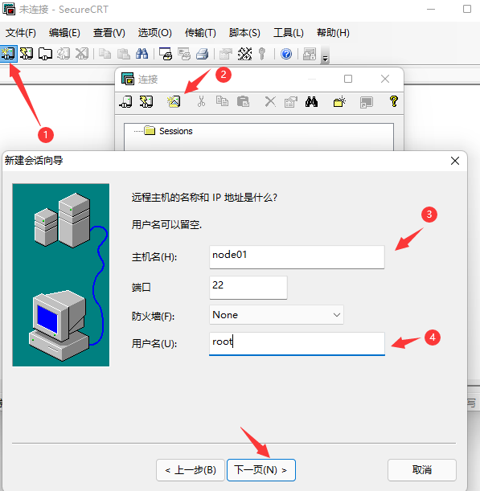
2.上传文件准备
// 安装winscp远程工具(FTP工具)或者安装rz工具上传文件
yum -y install lrzsz // 安装RZ
📦四.安装JDK和Hadoop
1.下载Linux版JDK8 和 Hadoop2.7.3版本
[Hadoop2.7.3 下载链接] https://archive.apache.org/dist/hadoop/core/hadoop-2.7.3/hadoop-2.7.3.tar.gz
[Linux Jdk1.8.0_65 下载链接]
略....
2.新建文件夹
// 在根目录下的opt文件夹内,创建software 和 module文件夹
// software用于存放压缩文件 | module用于存放安装程序
mkdir /opt/software /opt/module
3.上传文件
// 切换工作目录至software
cd /opt/software
// 使用FTP工具或者使用RZ上传JDK、Hadoop至software目录
// 下面演示的是RZ上传
rz
找到文件 >> 单击选中文件 >> 添加(可添加多个) >> 确定
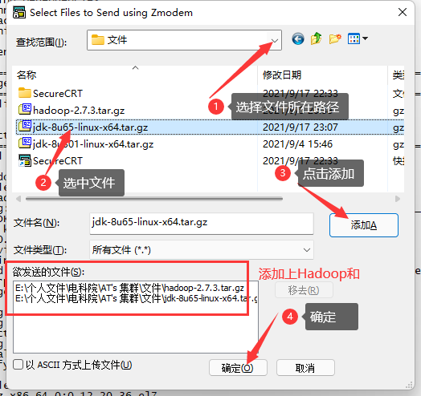
3-1.[CentOS 7.9 跳过 此步骤] 卸载Linux自带的JDK
// 查看以安装JDK版本
rpm -qa | grep jdk
// 卸载JDK
rpm -e --nodeps JDK名称 //或 yum remove 软件名称
4.解压JDK和Hadoop
// 解压JDK 至 /opt/module 文件夹
tar -zxvf /opt/software/jdk-8u65-linux-x64.tar.gz -C /opt/module
// 解压Hadoop 至 /opt/module 文件夹
tar -zxvf /opt/software/hadoop-2.7.3.tar.gz -C /opt/module/
5.重命名JDK和hadoop
// 重命名文件夹 jdk1.8.0_65 为 jdk
mv /opt/module/jdk1.8.0_65/ /opt/module/jdk
// 重命名文件夹 hadoop-2.7.3 为 hadoop
mv /opt/module/hadoop-2.7.3/ /opt/module/hadoop
6.配置环境变量
vi /etc/profile
// 移动最后一行 [shift + G]
// 添加
export JAVA_HOME=/opt/module/jdk
export HADOOP_HOME=/opt/module/hadoop
export PATH=$PATH:$JAVA_HOME/bin:$HADOOP_HOME/bin:$HADOOP_HOME/sbin
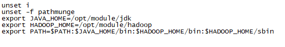
7.刷新环境变量令它生效
source /etc/profile
8.验证配置JDK和Hadoop是否成功
// 验证Java
java -version
// 验证Hadoop
hadoop version
📰五.修改Hadoop配置文件
// 切换工作目录至/opt/module/hadoop/etc/hadoop/
cd /opt/module/hadoop/etc/hadoop/
1.编辑core-site.xml
vi core-site.xml
# 添加 [在configuration之内]
# <configuration>
<property>
<name>fs.defaultFS</name>
<value>hdfs://node01:9000</value>
</property>
<property>
<name>hadoop.tmp.dir</name>
<value>/opt/module/hadoop/data/tmp</value>
</property>
# </configuration>

2.编辑hdfs-site.xml
vi hdfs-site.xml
# 添加 [在configuration之内]
# <configuration>
<property>
<name>dfs.replication</name>
<value>3</value>
</property>
<property>
<name>dfs.namenode.secondary.http-address</name>
<value>node02:50090</value>
</property>
# </configuration>
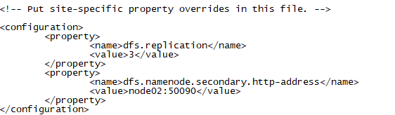
3.编辑mapred-site.xml
// 复制并重命名文件
cp mapred-site.xml.template mapred-site.xml
// 编辑文件
vi mapred-site.xml
# 添加 [在configuration之内]
# <configuration>
<property>
<name>mapreduce.framework.name</name>
<value>yarn</value>
</property>
# </configuration>
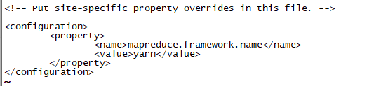
4.编辑yarn-site.xml
vi yarn-site.xml
# 添加 [在configuration之内]
# <configuration>
<property>
<name>yarn.nodemanager.aux-services</name>
<value>mapreduce_shuffle</value>
</property>
<property>
<name>yarn.resourcemanager.hostname</name>
<value>node01</value>
</property>
# </configuration>
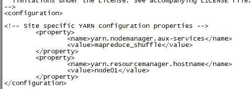
5.编辑slaves
vi slaves
// 删除 localhost
// 添加
node01
node02
node03
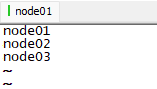
6.编辑hadoop-env.sh
vi hadoop-env.sh
// 找到export JAVA_HOME=${JAVA_HOME}
// 修改
export JAVA_HOME=/opt/module/jdk
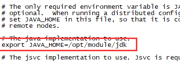
🖨️六.克隆虚拟机
1.关闭node01
poweroff
2.克隆
选中node01虚拟机 >> 管理 >> 克隆 >> 下一页 >> 下一页 >> 创建完整克隆 >> 修改虚拟机名称及位置 >> 完成
// 需要两台虚拟机,所以我们要克隆2次
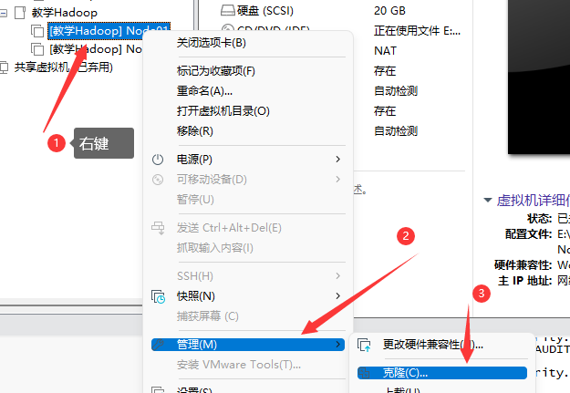
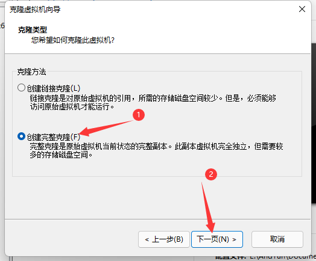
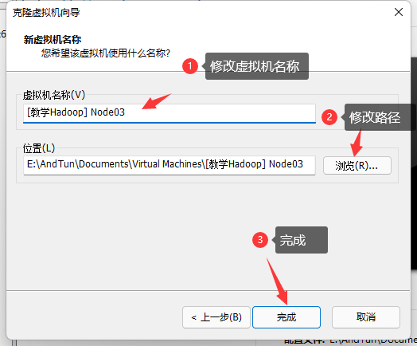
[注意] 上面的虚拟机名字是可自定义的,不用跟我一模一样,建议是对应你的主机名{例:node02}
3.启动机器
开启 Node01 Node02 Node03
4.修改Node02
// 修改主机名
hostnamectl set-hostname node02
// 编辑网卡,修改IP地址
vi /etc/sysconfig/network-scripts/ifcfg-ens33
// 修改
IPADDR=192.168.96.152 【!】
// 重启虚拟机
reboot
5.修改Node03
// 修改主机名
hostnamectl set-hostname node03
// 编辑网卡,修改IP地址
vi /etc/sysconfig/network-scripts/ifcfg-ens33
// 修改
IPADDR=192.168.96.153 【!】
// 重启虚拟机
reboot
🔑七.免密钥
// 只需要在Node01虚拟机上面操作即可
//生成机器间通信的密钥对，输入命令，直接按4个回车
ssh-keygen -t rsa
//创建authorized_keys文件
cat ~/.ssh/id_rsa.pub >> ~/.ssh/authorized_keys
//修改authorized_keys文件权限为600
chmod 600 ~/.ssh/authorized_keys
//验证SSH是否安装成功
ssh localhost
第一次登陆需要输入yes
//分发公钥，在分发过程中需输入yes和分发对象机器的登录密码
ssh-copy-id -i ~/.ssh/id_rsa.pub node02
ssh-copy-id -i ~/.ssh/id_rsa.pub node03
🏳️🌈八.开启集群
1.格式化namenode
hdfs namenode -format
2.启动集群
start-all.sh
3.验证
jps // 查看java进程
node01:50070 // 网址
node01:8088 // 网址
// 在HDFS中上传文件，在WEB中查看
hdfs dfs -put <文件路径> <上传到HDFS的路径>
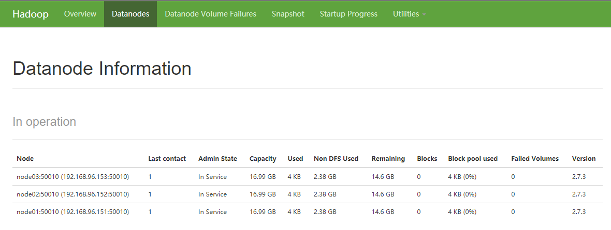
3.关闭集群
stop-all.sh
🎆恭喜你成功搭建了Hadoop集群~
疑难杂症？
1.使用RZ上传之后，用tar -zxvf解压显示
gzip: stdin: invalid compressed data--format violated
tar: Child returned status 1
tar: Error is not recoverable: exiting no
解决： 这是因为你输入RZ后在上传文件窗口的左下角“以ASCII方式上传文件”打勾了，取消即可
2.SecureCRT显示中文乱码？
解决： 文件 >> 连接 >> 选中乱码的会话 >> 右键属性 （会话选项）>> 外观 >> 字符编码 >> UTF-8 确认保存即可